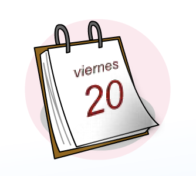
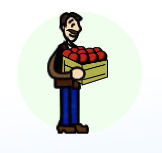

Algunos comentarios sobre inventarios son:
- Conociendo la cantidad de artículos que se venden, sabrás calcular cuándo debe reponerse de nuevo los artículos o materia prima en inventario.
- La cantidad puede ser medida en unidades, por ejemplo una unidad es un kilo de harina.
- No todos los artículos o materia prima se pueden almacenar por mucho tiempo, menos considerando si es un negocio de alimentos (los cuales debes revisar con mayor frecuencia en inventario).
Por todo lo anterior, existen 3 acciones importantes en el control de inventarios que debes realizar.

Revisar frecuentemente
Revisar frecuentemente las existencias de materia prima en inventarios Esta debe de hacerse de acuerdo al tipo de negocio. La revisión deberá de efectuarse a diario, o cada tercer día o por semana de acuerdo a tus necesidades.

Acomodar la mercancia
Acomodar la mercancía o materia prima. Puedes acomodarla por proveedor y así sabrás fácilmente que mercancía pedir por proveedor, lo puedes acomodar por tamaños o por frecuencia.
Llevar un registro
Llevar un registro de la mercancía o matería prima que se tiene almacenada. Cuando son varios artículos te puede llevar mucho tiempo contarlo,por eso es útil llevar un registro de los mismos.